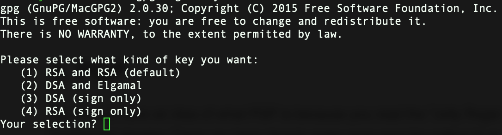
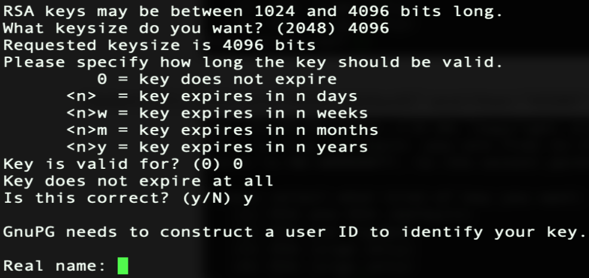

PGP
You should have an idea of what PGP is because you've already read the "Jolly Rogers catch-up" chapter. It's always best to test your PGP keys when you've created them to ensure you're able to decrypt messages before you send out your public PGP key to clients, associates, etc.
Since you're now using the Whonix VM all these examples are to done in Whonix-Workstation VM.
Load up your Whonix-Gateway and then you're Whonix-Workstation and open Terminal and type the following:
gpg --generate-full-key

Select "(1) RSA and RSA (default)" and then "4096" when asked for key size

Hit "0" on your keyboard for "0 = key does not expire", then enter whatever fake information associated to your fake email address, and then hit "O" on your keyboard for "(O)kay". You'll be prompted to enter a passphrase which will be used to decrypt the PGP messages that are sent to you. Ensure you remember this passphrase as you'll need it.
Exporting your public PGP key
You need to send someone your public PGP key in order for them to encrypt a PGP message to you. For the people who join HackTowm as a member you'll need to send me your public PGP key when joining. This is how.
To export your public PGP key you would open Terminal in Whonix-Workstation:
gpg --export -a "USERNAME"
To find your username of the keys you setup simply type:
gpg --list-keys
PGP OPSec
There are a few concerns about how people use PGP that you should be aware of. Let's look at a few examples that demonstrate the weakness in people when using PGP before you implement it yourself.
When you've received a new public PGP key it should be noted that sometimes when you import a public PGP key it will reach out to PGP servers to validate the key if setup to do so. Since we're using Whonix now we could care less but for the people who choose to use their host machine and not follow proper OPSec this will be a problem. Not every public PGP key will authenticate like this but if you've installed and are using opensnitch, Glasswire, or Littlesnitch then you would've caught the outgoing connection to the PGP server when importing the key and denied the connection.
Theoretically LE could give you their public PGP key and collaborate with the PGP servers to determine what IP reached out to it when validating their specific public PGP key. Tin foil hat shit but very plausible it's occurring or will occur.
Below you''ll see why using your host OS can be a concern sometimes without you even knowing it. Remember, you should be using Whonix in a VM. Let's look at some examples of an encrypted PGP message when people did it from their host OS and we're not using Whonix:
Example 1:
Example 2:
Example 3:
Notice the line right under "-----BEGIN PGP MESSAGE-----" are different in each example. This is because each PGP message was created on a different operating system.
Example 1 was done on a macOS computer.
Example 2 was done on a Windows computer.
Example 3 was done on a Linux computer.
By mistakenly letting others know what OS you're using allows for your adversaries to know what exploits to send you ;)
This is why we're doing everything through Whonix! For the people that ignore this and use their host OS you expose yourself to unknown risks.
If you were, for whatever reason, using PGP on Windows, macOS, or Linux there's no need to give out any information that can reveal what type of OS you're using. We ensure we're not leaking any sensitive details by using:
gpg --encrypt --armor --no-comments --no-emit-version -r PUBLIC_KEY_OF_RECEPIENT
When using PGP in Whonix in Terminal we use:
gpg --encrypt --armor -r KEY
This seems to strip out all of that information automatically for you. You can see how this information can reveal more to our adversaries and the rationale for not wanting any of that leaked out.
The final PGP OPSec caution to be aware of is when you're signing a PGP message to verify it's you for whatever reason. You want to ensure you put the date in the message and the reason for the signed PGP message to ensure you don't get impersonated on other forums.
For example, if I've registered on a new hacking forum and existing members want me to prove my identity then I would sign a PGP message associated to my public PGP key. This is quite common and totally safe but below is a
bad way of doing it.
To verify signed PGP messages we would:
gpg --verify
Paste the whole signed PGP message:
-----BEGIN PGP SIGNED MESSAGE-----
Eveything in between these two lines
-----END PGP SIGNED SIGNATURE-----
Then hit enter once and hold "CTRL" the hit the letter "d" on your keyboard.
People can verify your signed message to know %100 it's you since only the public/private PGP key owner can sign the PGP message to prove their identity. However, since we didn't add any date or any information to the PGP signed message anyone can copy our signed message and use it on any forum attempting to impersonate you. So if you're going to verify yourself via PGP then ensure you cover your ass.
Food for thought.
How to import public PGP keys
Before you encrypt any messages to your drug cartel gang bangers you need their public PGP key to encrypt messages specifically for them. Their public PGP key would appear like mine does:
When you've received a new public PGP key and you want to import it onto your key ring with PGP we then:
Open up terminal
gpg --import
Hit Enter on your keyboard
Paste my whole public PGP key and then hit enter once then hold "CTRL" and hit the letter "d" on your keyboard.
You can now see my key:
gpg: key 8B829B98FD91D5FE: "Funshine Funshine@secmail.pro>" imported
"8B829B98FD91D5FE" is my key needed to send an encrypted PGP message to me.
In Whonix in Terminal:
gpg --encrypt --armor -r 8B829B98FD91D5FE
Type out your message and when you're done hit enter then hold "CTRL" and hit the letter "d" on your keyboard which will produce the encrypted PGP message to send.
Encrypting messages
In Whonix in Terminal:
gpg --encrypt --armor -r KEY
Type out your message and when you're done hit enter then hold "CTRL" then hit the letter "d" on your keyboard which will produce the encrypted PGP message to send.
Remember to send the whole message including the associated headers to your clients/people.
So you would send below:
-----BEGIN PGP MESSAGE-----
Everything in between
-----END PGP MESSAGE-----
Decrypting messages
In Whonix in Terminal:
gpg -d
Hit Enter on your keyboard
Paste the whole message including the proper headers.
-----BEGIN PGP MESSAGE-----
Everything in between
-----END PGP MESSAGE-----
Hit enter once then hold "CTRL" then hit the letter of "d" when done.
You'll need to enter your passphrase for your public PGP key in order to decrypt the message.
That's all you really need to know about PGP as the Jolly Rogers Security guide should've filled you in on the rest!
***Ensure you backup your key ring from time to time!***
Click to continue to Chapter 9